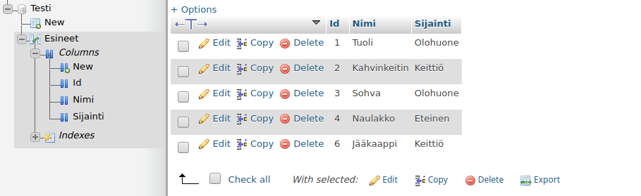
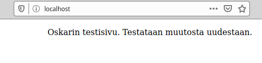

Aloin asentamaan apachea komennolla sudo apt-get -y install apache2. Hetken päästä asennus oli valmis. Kokeilin
localhostista, näkyykö oletussivu. Oletussivu näkyi,
vaikutti siltä että asennus onnistui. Seuraavaksi käyttäjien kotisivut.
Käyttäjien kotisivut voisi ottaa käyttöön komennolla sudo a2enmod userdir, mutta nyt lähdin kokeilemaan linkitystä
komennolla
ln -s. Ensin tein hakemiston public_html käyttäjän
kotihakemistoon verkkosivuja varten komennolla cd && mkdir public_html. Loin sinne testitiedoston index.html
komennolla echo "Testi" > index.html.
Ajoin komennot sudo ln -s /etc/apache2/mods-available/userdir.conf /etc/apache2/mods-enabled/userdir.conf ja sudo ln -s /etc/apache2/mods-available/userdir.load /etc/apache2/mods-enabled/userdir.load
Aluksi ei vaikutus näkynyt, täytyi uudelleenkäynnistää palvelindemoni: sudo systemctl restart apache2.
Tämän jälkeen muutokset tulivat näkyviin.
Testitiedosto tuli selaimeen näkyviin osoitteessa localhost/~xubuntu/, käyttäjän kotisivut vaikuttivat toimivan.
Avasin apachen access-lokitiedoston komennolla cd /var/log/apache2/ && tail -f access.log. Päivitin sivun
selaimesta, ja lokiin
ilmestyi GET-pyyntö.
Ensimmäinen osa, eli IP-osoite 127.0.0.1 on sama kuin isäntäkoneen localhost. Tämän jälkeen hakasuluissa näkyy aikaleima (huom. aikavyöhyke on leimassa UTC, eli pari tuntia Suomen aikaa jäljessä.). Tämän jälkeen pyynnön tyyppi, url ja sen protokolla, eli kyseessä on HTTP GET-tyyppinen pyyntö osoitteeseen 127.0.0.1/~xubuntu. Sen jälkeen statuskoodi 200, joka vastaa onnistunutta pyyntöä, jota seuraa vastauksen pituus tavuina, tässä tapauksessa 286. Tätä osiota seuraa tiedot user-agentista, eli tietoja pyynnön tehneestä selaimesta ja järjestelmästä. Riviltä käy ilmi selain, eli Mozilla Firefox versio 68, ja käyttöjärjestelmä xubuntu linux x86_64. Geckotrail 20100101, eli tieto siitä, että selain on Gecko-pohjainen. rv:68.0 on geckoversio, joka siis on sama kuin Firefoxin versio.

Tässä on muuten sama rakenne kuin aiemmassa, mutta vastaus on tavuina hieman pitempi (488), statuskoodi 404, eli Not
Found. Aikaleima on hetkeä aiemmin kuin edellinen onnistunut
lokitapahtuma, eli pyyntö oli tehty ennen kuin suoritin komennon sudo systemctl restart apache2 kohdassa a).
Menin hakemistoon /etc/apache2/ komentorivillä, ja tarkoituksenani on tehdä tiedostoon apache2.conf jokin virheen aiheuttava muutos.
Yhdellä rivillä määriteltiin tiedosto, josta kuunneltavat porti löytyy: Include ports.conf. Muutin tätä hiukan: Include portit.conf.

Tarkistin tuliko ilmoitusta komennolla apache2ctl configtest, ja se näytti virheilmoituksen. Virheen alku kertoo sen koskevan apache2:ta. Sen jälkeen siinä ilmoitetaan syntaksivirheestä rivillä 150 tiedostossa apache.conf. Lauseeseen on myös merkitty absoluuttinen tiedoston polku. Sitten ilmoitus kertoo ettei ‘portit.conf’ - nimistä tiedostoa voi avata, koska sitä ei löydy. Tämän jälkeen todetaan että configtest epäonnistui sekä apachen error logissa saattaa löytyä lisätietoa.
Phpmyadminin vaatimuksina ovat Web-palvelin, PHP, tietokanta ja selain.
Koneeseen on jo apache sekä selain asennettuna. Aloitan asentamalla mysql serverin komennolla sudo apt-get -y
install mysql-server. Tämän jälkeen asensin php:n komennolla sudo apt-get -y install php. Nyt koneessa on Linux,
Apache, MySql ja Php asennettuna.
Sitten asensin phpmyadminin komennolla sudo apt-get -y install phpmyadmin. Valitsin palvelimista apachen ja asetin
salasanan.
Testasin, että php toimii tekemällä phpinfo-funktiota kutsuvan tiedoston index.php hakemistoon /var/www/html. Php
näytti toimivan.
Testasin phpadminia osoitteesta localhost/phpmyadmin, mutta se ei jostain syystä avautunut. Pienen googlaamisen jälkeen kävin lisäämässä apachen asetustiedoston /etc/apache2/apache2.conf loppuun rivin: Include /etc/phpmyadmin/apache.conf. Käynnistin apachen uudelleen ja tämä auttoi.
Koitin kirjautua sisään kokeillakseni phpmyadminia, mutta sain vastaani virheilmoituksen: Access denied for user 'root'@'localhost'.
Luodaan superuser-käyttäjä mysqliin. Kirjauduin mysqliin komennolla sudo mysql -p -u root.
Loin käyttäjän: CREATE USER 'käyttäjänimi'@'%' IDENTIFIED BY 'salasana';
Sitten annoin käyttäjälle superuser-oikeudet komennolla:
GRANT ALL PRIVILEGES ON *.* TO 'käyttäjänimi'@'%' WITH GRANT OPTION;
Kokeilin kirjautuaa sisään phpmyadminiin uudella käyttäjällä ja se onnistui.
Loin Tietokannan testi ja sinne relaation Esineet. Tänne laitoin testiksi tietoja muutamasta Esineestä.
Menin komentorivillä apachen access
logiin hakemistoon /var/log/apache2 ja aloin seuraamaan lokia komennolla tail -f access.log. Päivitin
selaimessa sivun, jossa oli localhost auki ja lokiin tuli kaksi ilmoitusta, toinen statuskoodilla 200 ja
toinen statuksella 304. Loput statukset sain aikaan firefoxin developer konsolin network-välilehdeltä
tekemällä erilaisia HTTP-pyyntöjä.
Pyynnön IP-osoite on 127.0.0.1, se on tehty 8. Helmikuuta 2020 kellonaikaan 13:38:57 aikavyöhykkeellä UTC+2. Pyyntö on GET- tyyppinen, polku on / eli juuri, protokolla on HTTP/1.1. Statuskoodi on 200 eli onnistunut pyyntö, vastauksen pituus tavuina on 3477, joka vastaa apache2:n oletussivun pituutta. Selain on mozilla-yhteensopiva, X display protokollaa käyttävä ubuntu linux amd64, gekkoversio on 72.0, selain on Geckoon pohjautuva Firefox versio 72.0.

IP-osoite, aika, tyyppi, protokolla sekä selain- ja järjestelmätiedot ovat samat kuin yllä, mutta polku on /icons/ubuntu-logo.png ja statuskoodi 304, mikä kertoo asiakkaalle että vastausta ei ole muutettu, joten asiakas voi käyttää välimuistissa olevaa vastauksen versiota. Tämä kuva ubuntu-logo.png on siis ladattu jo aiemmin.

Tämä pyyntö on tehty polkuun /asd, jota ei ole olemassa, joten selain vastaa siihen statuksella 404, koska pyydettyä resurssia ei löydy palvelimelta.

Tämä on tyhjä DELETE-tyyppinen pyyntö palvelimen juureen. Tämän pyynnön palvelin tunnistaa, mutta api ei tue sitä. Siksi pyynnön metodia ei sallita.

Tässä on tyhjä POST-tyyppinen pyyntö polkuun /asd, jonka tuloksena oli timeout. Pyynnön osoitetta ei ole olemassa, eikä POST-tyyppisiä pyyntöjä tueta, joten se aikakatkaistiin.

Yritin tehdä selaimen konsolilla ASD-tyyppisen http-pyynnön. ASD-tyyppistä HTTP-pyyntöä ei ole olemassa, joten palvelin vastasi koodilla 501, joka tarkoittaa sitä ettei kyseisen tyyppistä pyyntöä tueta eikä sitä voida käsitellä.
Kohdan a) jälkeen käyttäjän sivut ovat toiminnassa. Otin ne pois toiminnasta komennolla sudo a2dismod userdir.
Tarkoituksena on laittaa käyttäjän kotisivut näkymään localhostissa virtual name based hostingin avulla.
Sitten menin hakemistoon /etc/apache2/sites-available/ ja loin tiedoston komennolla sudoedit
oskarintestisivu.com.conf, ja muokkasin sen näyttämään tältä:
Sitten otin oletussivun pois käytöstä komennolla sudo a2dissite 000-default.conf ja
asetin uuden sivun käyttöön komennolla sudo a2ensite oskarintestisivu.com.conf.
Käynnistin apache2 demonin uudestaan komennolla sudo systemctl restart apache2. Menin katsomaan localhostia.
Testisivu tuli näkymään localhostissa. Alkuperäinen html-dokumentti on käyttäjän hakemistossa kansiossa public_html. Kokeilen tehdä muutoksen dokumenttiin ja käynnistää apache2:n uudestaan. Muutos tuli näkyviin onnistuneesti
Kokeilin vielä tehdä toisen muutoksen avaamalla uuden terminaalin ja olla käynnistämättä palvelinta uudelleen. Sekin muutos tuli näkyviin.
